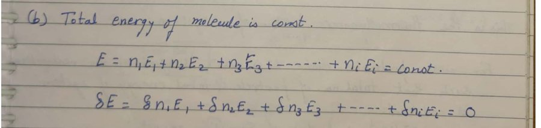
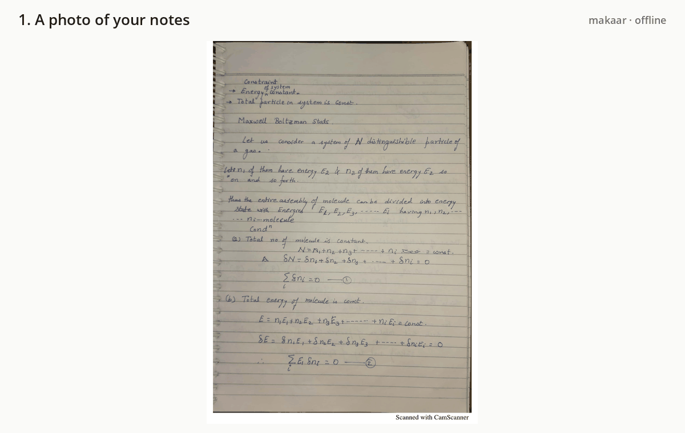
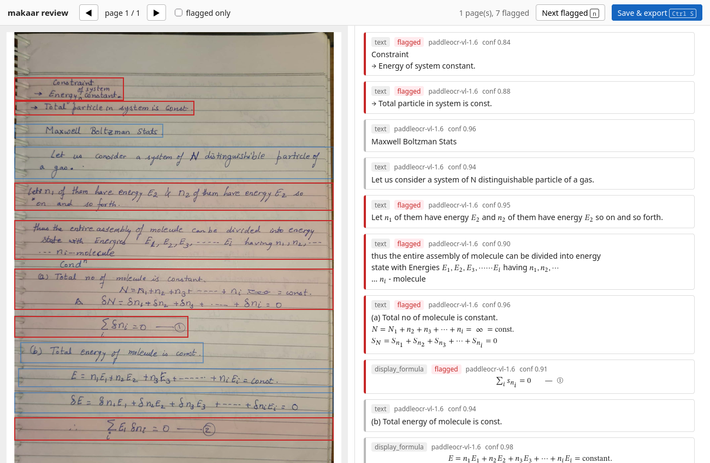

Offline OCR
makaar turns photos of your notes, handwritten or printed, into Markdown, LaTeX and Word with real equations. It runs on your laptop. Nothing is uploaded.
Free and open source · Windows, macOS, Linux · v0.1.0

makaar writes
Unedited output
Take a photo or scan a PDF. makaar finds every block on the page, reads it, and writes the equations as real LaTeX, so they compile, and as native Word equations you can edit.
Anything it is unsure of is marked for a quick check, so nothing changes silently.
Three steps
Images, PDFs or a whole folder. Tick Handwritten notes for handwriting: more accurate, no slower.
Each page appears as it is read. You get notes.md, .tex and .docx.
See the scan beside what was read. Fix the red boxes, save, and every file updates.

Measured, not claimed
We test against Gemini on public benchmarks and publish every number, including where we lose.
fewer errors on printed pages than Gemini 3.5 Flash-Lite: error rate 0.130 vs 0.207 on 126 OmniDocBench pages.
with Gemini 3.5 Flash on handwritten maths: 0.203 vs 0.225 on 30 CROHME expressions.
on handwritten prose: 0.079 vs Gemini's 0.029 on 30 IAM lines. We're working on it.
Error rate is normalised edit distance, the share of characters you would have to fix; lower is better. Speed: about 7 seconds a page with an NVIDIA GPU from the command line, 1–2 minutes on a laptop CPU. The desktop app uses the CPU for now. Full method and tables: RESULTS.md.

Private by design
Exam papers, lab notebooks and medical notes never leave your computer. After a one-time model download, makaar needs no internet, no account and no API key.
Download
Windows will say the publisher could not be verified; click Run. Or, on a blue screen, More info → Run anyway. We're working on signing.
Drag makaar to Applications. The first time, right-click it and choose Open.
Run chmod +x on the AppImage and start it, or sudo apt install ./makaar_*.deb.
The first start downloads the reading models: about 1.9 GB, once, checked with SHA-256. The command-line version and all files are on Codeberg Releases.